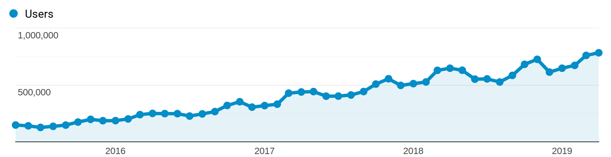

class: center, middle # Introduction to scikit-learn ## Predictive modeling in Python Olivier Grisel .affiliations[   ] Slides: [ogrisel.github.io/decks/2019_intro_sklearn](http://ogrisel.github.io/decks/2019_intro_sklearn) --- # Agenda .middlebelowheader[ ### Machine Learning refresher ### Where do predictive models fit? ### Scikit-learn ### The open-source development process ] --- # Predictive Modeling 101 .middlebelowheader[ ### Make predictions of outcome of repeated events ### Extract the structure of historical records ### Statistical tools to summarize the training data into an executable model ### Alternative to hard-coded rules written by experts ] --- background-image: url(images/real-estate-1.png) background-size: contain --- background-image: url(images/real-estate-2.png) background-size: contain --- background-image: url(images/real-estate-3.png) background-size: contain --- background-image: url(images/real-estate-4.png) background-size: contain --- background-image: url(images/predictive-modeling-examples.png) background-size: contain --- background-image: url(images/ml-flow-01.png) background-size: contain --- background-image: url(images/ml-flow-02.png) background-size: contain --- background-image: url(images/ml-flow-03.png) background-size: contain --- background-image: url(images/ml-flow-04.png) background-size: contain --- background-image: url(images/ml-flow-05.png) background-size: contain --- background-image: url(images/ml-flow-06.png) background-size: contain --- background-image: url(images/ml-flow-07.png) background-size: contain --- background-image: url(images/ml-flow-08.png) background-size: contain --- background-image: url(images/ml-flow-09.png) background-size: contain --- background-image: url(images/ml-flow-10.png) background-size: contain --- background-image: url(images/ml-flow-10.1.png) background-size: contain --- background-image: url(images/ml-flow-11.png) background-size: contain --- class: center, middle, bgheader background-image: url(images/forest-9026372290_ffed331779_k.jpg) background-size: cover # Where do predictive models fit? --- background-image: url(images/11-big-data-archictecture.png) background-size: contain --- background-image: url(images/12-big-data-tools-mix-1.png) background-size: contain --- background-image: url(images/13-big-data-tools-mix-2.png) background-size: contain --- class: center, middle, bgheader background-color: rgb(30, 100, 0) # Scikit-learn --- .center[  ] .middlebelowheader[ ### Library of Machine Learning algorithms ### Open Source project ### Python / NumPy / SciPy / Cython ### Simple **fit** / **predict** / **transform** API ### Model Assessment, Selection, Ensembles ] --- .center[  ] .middlebelowheader[ ### Core team: Australia, China, France, Germany, USA ### Users: Scientific/Academic and Business/Industry  ] --- background-image: url(images/funding-1.png) background-size: 80% --- background-image: url(images/funding-2.png) background-size: 80% --- background-image: url(images/sklearn-flow-1.png) background-size: contain --- background-image: url(images/sklearn-flow-2.png) background-size: contain --- background-image: url(images/sklearn-flow-3.png) background-size: contain --- # Linear Classifier .middlebelowheader.medium[ ```python from sklearn.linear_model import LogisticRegression model = LogisticRegression(C=1, penalty='l1') model.fit(X_train, y_train) y_predicted = model.predict(X_test) from sklearn.metrics import f1_score f1_score(y_test, y_predicted) ``` ] --- # Support Vector Machine .middlebelowheader.medium[ ```python from sklearn.svm import SVC model = SVC(kernel="rbf", C=1.0, gamma=1e-4) model.fit(X_train, y_train) y_predicted = model.predict(X_test) from sklearn.metrics import f1_score f1_score(y_test, y_predicted) ``` ] --- # Random Forest .middlebelowheader.medium[ ```python from sklearn.ensemble import RandomForestClassifier model = RandomForestClassifier(n_estimators=200) model.fit(X_train, y_train) y_predicted = model.predict(X_test) from sklearn.metrics import f1_score f1_score(y_test, y_predicted) ``` ] --- background-image: url(images/classifier_comparison.png) background-size: contain --- background-image: url(images/scikit-learn.org.png) background-size: contain --- class: center, middle, bgheader background-image: url(images/racks-8533890844_02fa24474d_o.jpg) background-size: cover # Scikit-learn development --- background-image: url(images/list_of_open_prs.png) background-size: contain --- background-image: url(images/pr-1.png) background-size: contain --- background-image: url(images/pr-1.1.png) background-size: contain --- background-image: url(images/pr-2.png) background-size: contain --- background-image: url(images/pr-2.png) background-size: contain --- background-image: url(images/pr-3.png) background-size: contain --- background-image: url(images/pr-4.png) background-size: contain --- background-image: url(images/changelog.png) background-size: contain --- background-image: url(images/contributors.png) background-size: contain --- background-image: url(images/fondation_inria_scikit-learn_partners.png) background-size: contain --- background-image: url(images/community.png) background-size: contain --- class: center, middle, bgheader background-color: rgb(30, 100, 0) # Conclusion --- class: middle, center, singleimg  --- # Secrets of the success of Python (& R) in Data Science .middlebelowheader[ ### Iterative exploration with built-in plotting tools ### Low latency of single host in-memory computing ### Easy to install, easy to teach: no-sysadmin required ### Rich ecosystem of libraries ] --- class: middle # Thank you for your attention! - https://scikit-learn.org - Slides: [ogrisel.github.io/decks/2019_intro_sklearn](http://ogrisel.github.io/decks/2019_intro_sklearn) - @ogrisel on twitter --- Background image credits - https://www.flickr.com/photos/jemimus/8533890844/ - https://www.flickr.com/photos/antcaz/2249694239/ - https://www.flickr.com/photos/benjamine-s/14004414605 - https://www.flickr.com/photos/a-herzog/9026372290